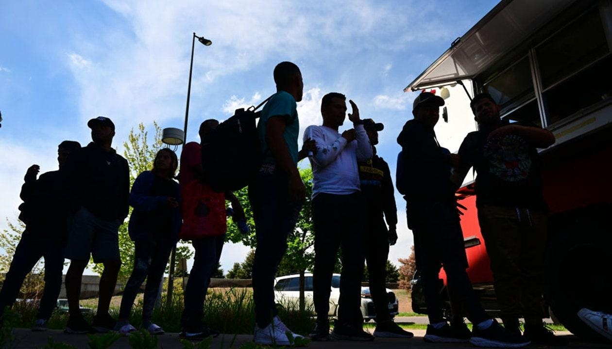

Denver to slash budgets by up to 15% due to ongoing illegal immigrant crisisDenver Mayor Mike Johnston is warning the liberal city that budgets for city departments could be slashed by up to 15% in order to deal with the massive cost of the ongoing migrant crisis it is facing. Johnston said this week that the city needs to compensate for about $180 million in spending on sheltering illegal immigrants who have come there either by themselves or via buses from Texas. He said he has asked agency heads to begin to draw up plans for the cuts in the 2024 budget. He also said that the 4,800 migrants in shelters means that it does not have space to house anyone else at the moment. "We have a lot of suboptimal options which are either offering everyone onward travel to another location or trying to hope they have friends or family they can stay with here, but we think we are at a very different tipping point than we’ve seen any way up to this moment," he said on Tuesday. Johnston is one of a number of mayors who have appealed for more federal aid, asking for over $5 billion. The Biden administration is currently seeking around $1.5 million from Congress as part of the border section of its supplemental funding request. "I have called the White House," Johnston said on "America’s Newsroom" last week. "We've told them we need more federal aid. That's why there's dollars in that supplemental budget to do that." Denver has previously confirmed considerable costs in handling the crisis, including $4.5 million for transporting around 12,000 migrants out of state to alternative destinations. Johnston has called for expedited work permits and a nationally coordinated entry system, as well as a coordinated effort to place migrants across the U.S. "What we know is, this works if you coordinate that entry, you know if you have cities and states that collaborate the same way we did when we brought in refugees from Ukraine or refugees from Afghanistan, we identified cities that had capacity, we brought them in with work authorization, we gave them some federal support and those people have succeeded tremendously," he said on Fox News Sunday. Johnston’s budget cutting comes weeks after New York City announced deep budget cuts to multiple departments due to the migrant crisis it is facing. There, New York City Mayor Eric Adams has made similar calls for federal intervention. The mayors have also bristled at the practice by Texas Gov. Greg Abbott of sending migrant buses to their cities. Adams recently slapped restrictions on when and where buses can drop off, and also filed a lawsuit against more than a dozen transportation companies. Meanwhile, the border crisis remains ongoing, with over 302,000 migrant encounters in December alone after a record-breaking 2.4 million in FY 24. |
 |